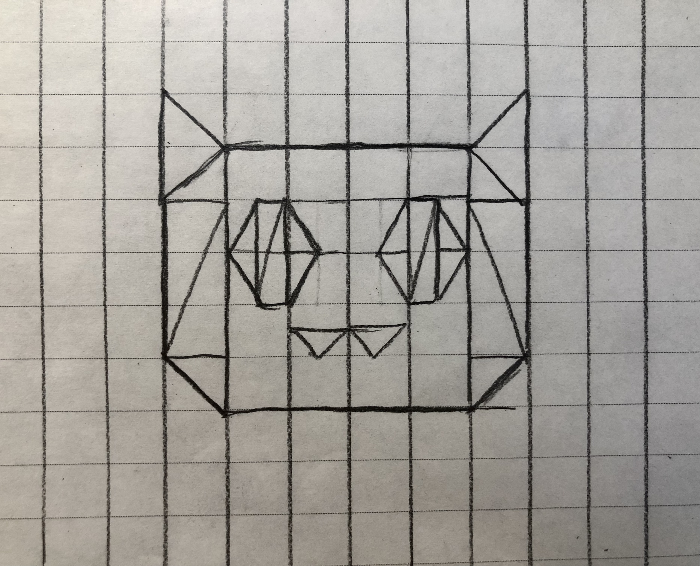

number of dot: 0 ms: 0 fps: 0
Red
Green
Blue
Alpha
Size
Circle Segment
Triangle Rotatation
Polygon Side
Jiayi Hu
jhu343@ucsc.edu
Notes:
- Example Painting: display the painting
- Alpha: A slider to adjust alpha value
- Triangle Rotation: A slider to rotate triangle
- Polygon: A button to draw polygon (diamond in default)
- Polygon Side: A slider to adjust the number of the side for the polygon (4 - 12)
Drawing Sketch:
